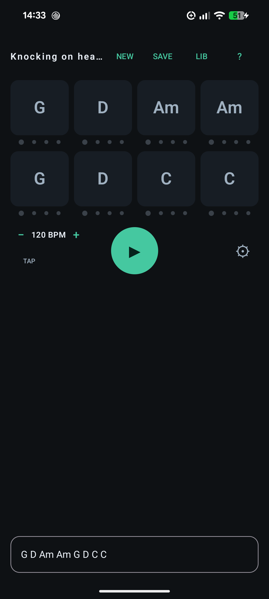
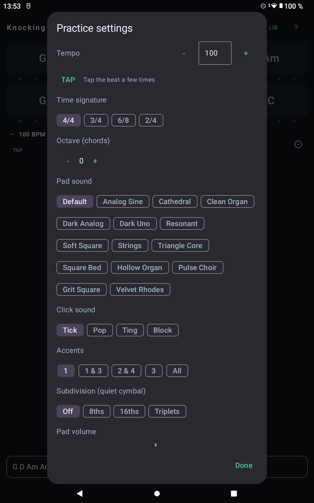
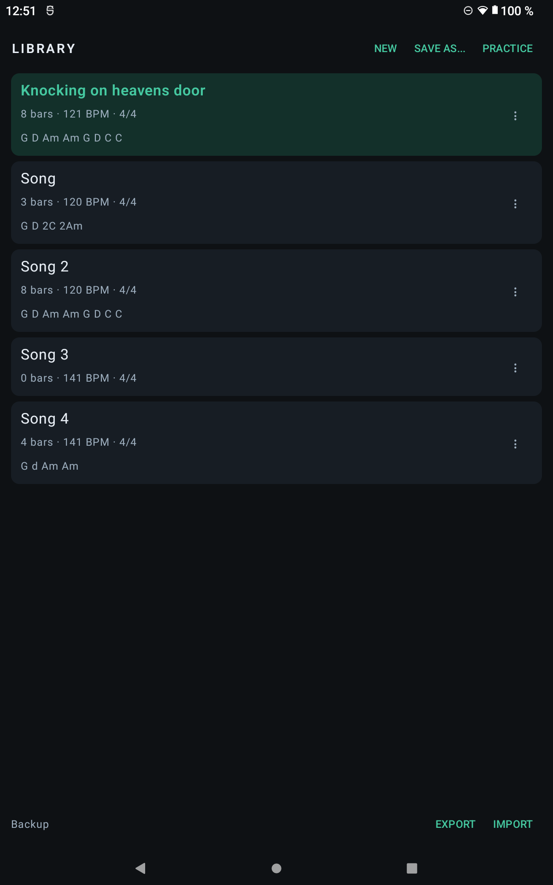

ChordPad
A chord-chart practice looper for Android. Type a progression, get a pad bed and a click, and practise in the key the app infers.
Download ChordPad 1.1


What it does
- Type a chart such as
G D 2C 2Am. Each chord lasts a bar; a leading number sets its beats. - Loops a pad bed and a click, infers the key, and voices the chords from the tonic.
- Fifteen pad sounds, four click sounds, accent patterns and 8th/16th/triplet subdivisions.
- Tap tempo, per-song octave transpose, live settings while the loop plays.
- Saved library with progressions shown, plus JSON export/import for backup.
- An in-app ? help dialog explains the syntax.
New in 1.1
- Static, calibrated mix that stays audible at normal system volume.
- TAP under the BPM stepper.
- Per-song octave (−1 / 0 / +1) for the chord voicings.
- Help dialog and Library progression lines.
- Five new square/pulse pads: Square Bed, Hollow Organ, Pulse Choir, Grit Square, Velvet Rhodes.
- Library backup export/import and a batch of reliability fixes (audio-thread locking, draft autosave, corrupt-library rescue, parser overflow, 44.1 kHz resampling).
Install
- Download the APK above.
- Open it on the Android device. If asked, allow installing from this source (Settings → Apps → Special access → Install unknown apps).
- No account, no network, no special permissions.
Updating from 1.0
1.0 was signed with a temporary development key; 1.1 uses a real upload key. Android will refuse to install 1.1 over 1.0. In the old app, open LIB → EXPORT and keep the JSON file, uninstall 1.0, install 1.1, then LIB → IMPORT that file.
Updates
New versions are posted on this page and on
GitHub Releases; the download button
always points at the newest APK. If you use Obtainium,
add https://github.com/KickStomp/chordpad to get update notifications, since there
is no store to push them for you.
Privacy
ChordPad has no internet permission, no analytics, no ads and no accounts. Charts, settings and backups stay on the device; a backup is written only where you choose in the system file picker. Uninstalling removes the app's data, so keep a backup if you might reinstall.
Verify the download
APK SHA-256:a2b00074e834fe9f2d8ff344898723952e894ed483bbff0f99dbf35af4057c0e
Signing certificate SHA-256 (CN=ChordPad):
77:67:97:AA:1A:B3:D4:6C:16:C5:54:1B:3E:27:8E:29:85:BB:B4:1A:A0:14:2A:A7:FF:30:E3:D8:BA:00:AE:EF
Requirements and testing
Android 10 (API 29) or newer. Tested on Android 15 on a Lenovo TB328FU tablet and a Pixel 8a. Older Android versions are supported in the build but have not yet been device-verified.